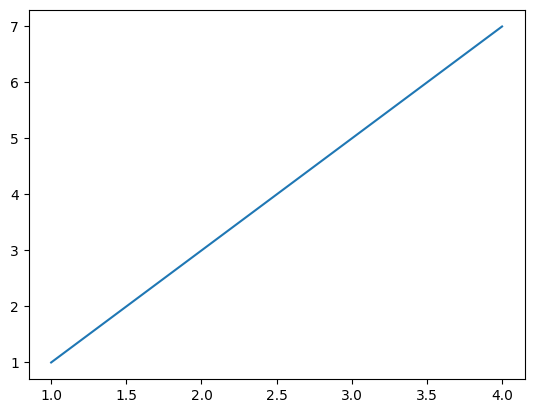
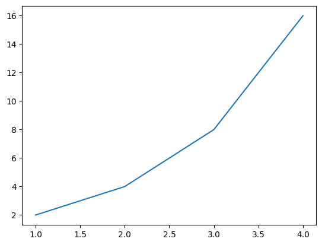
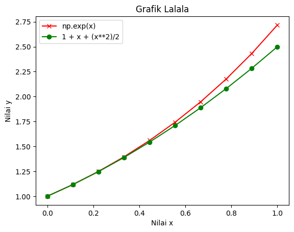

print(5 + 2)
print(5 - 2)
print(5 * 2)
print(5 / 2)
print(5 ** 2)
print(5 % 2)
print(5 // 2)7
3
10
2.5
25
1
2Kembali ke Metode Numerik
Catatan: Modul 0 ini adalah modul pengantar/review yang tidak dibahas ketika sesi praktikum.
Berikut topik-topik yang akan dibahas pada Modul 0 ini:
Di Python, kita bisa melakukan beberapa operasi aritmetika, menggunakan simbol sebagai berikut:
(+) untuk penjumlahan
(-) untuk pengurangan
(*) untuk perkalian
(/) untuk pembagian
(**) untuk pangkat
(%) untuk operasi mod atau modulo (sisa pembagian)
(//) untuk operasi div (hasil bagi tanpa sisa)
print(5 + 2)
print(5 - 2)
print(5 * 2)
print(5 / 2)
print(5 ** 2)
print(5 % 2)
print(5 // 2)7
3
10
2.5
25
1
2Seandainya kita tidak menggunakan print untuk menampilkan hasil perhitungan,
5 + 275 - 2
5 * 210maka hanya hasil dari baris terakhir yang akan ditampilkan. Oleh karena itu, sangat disarankan untuk SELALU menuliskan print, termasuk untuk baris terakhir, agar modifikasi program menjadi lebih mudah dan cepat, apalagi ketika ingin menambah baris baru.
Perhatikan bahwa tanda % sudah dikhususkan untuk modulo, sehingga artinya BUKAN PERSEN, ya! Persen dalam Python bisa dituliskan sebagai pembagian dengan 100 (sesuai definisi persen), misalnya untuk 50% atau 21%:
print(50/100)
print(21/100)0.5
0.21Kita bisa menyimpan nilai (termasuk hasil perhitungan) ke suatu tempat penyimpanan yang disebut variabel. Tiap variabel memiliki nama tersendiri, yang kita definisikan sendiri. Proses penyimpanan nilai ke suatu variabel disebut proses assignment, yang memiliki syntax (cara penulisan) sebagai berikut:
contoh_variabel = 23
di mana 23 adalah contoh nilai yang ingin dipasang ke contoh variabel yang kita beri nama “contoh_variabel”. Untuk assignment, tanda = cukup ditulis sekali saja, ya!
Kemudian, kita bisa menggunakan print untuk menampilkan isi variabel tersebut.
contoh_variabel = 23
print(contoh_variabel)23Jangan sampai salah ketik, ya! Penggunaan huruf besar/kecil perlu diperhatikan, jangan sampai tertukar.
print(contoh_Variabel)--------------------------------------------------------------------------- NameError Traceback (most recent call last) Cell In[6], line 1 ----> 1 print(contoh_Variabel) NameError: name 'contoh_Variabel' is not defined
Kita mendapat error “name ‘contoh_Variabel’ is not defined”, artinya ‘contoh_Variabel’ itu tidak didefinisikan, karena Python menganggap itu berbeda dengan contoh_variabel yang memang sudah kita definisikan. Tentu kita tetap bisa mendefinisikannya:
contoh_variabel = 23
contoh_Variabel = 45
print(contoh_variabel)
print(contoh_Variabel)23
45Ada beberapa hal yang dilarang dalam penamaan variabel.
Contoh penamaan yang valid (boleh, bisa diterima):
abc1 = 21
xyz9000 = 3Karena valid, variabel berhasil tersimpan dengan baik, sehingga bisa dilihat isinya:
print(abc1)
print(xyz9000)21
3Contoh penamaan yang dilarang (akan menghasilkan error):
999nama = 10Cell In[10], line 1 999nama = 10 ^ SyntaxError: invalid decimal literal
Selain keterangan spesifik seperti “invalid decimal literal”, kita juga bisa mendapatkan keterangan error yang lebih umum yaitu “invalid syntax” atau “syntax tidak valid”. Karena terjadi error, proses assignment tidak berhasil, sehingga kita tidak bisa melihat isinya karena variabel tersebut memang gagal didefinisikan:
print(999nama)Cell In[11], line 1 print(999nama) ^ SyntaxError: invalid decimal literal
Kita juga bisa menggunakan variabel, seperti mengoperasikan variabel untuk menghasilkan nilai baru:
print(abc1 * 10)
print(abc1 / xyz9000)210
7.0Bahkan, kita bisa memasang hasil operasi tersebut ke variabel lain:
hasil_bagi = abc1 / xyz9000
print(hasil_bagi)7.0Perhatikan potongan kode berikut.
a = 6
b = 3
print(a / b)
a, b = b, a
print(a / b)2.0
0.5Pada baris 4, kita menukar nilai pada variabel a dan b. Python bisa meng-assign lebih dari 1 variabel dalam 1 baris, cukup dengan memisahkan tiap variabel dan nilai dengan , (tanda koma).
x, y, z = 0, 1, 2
print(x)
print(y)
print(z)0
1
2Walaupun cara tersebut berlaku untuk sebanyak-banyaknya variabel, pada umumnya lebih baik melakukan assignment satu variabel per baris saja agar kode tetap mudah dibaca, apalagi fitur tersebut hanya ada di bahasa pemrograman Python.
Penukaran variabel tetap bisa dilakukan sesuai cara yang dipelajari di mata kuliah Algortma dan Pemrograman, yaitu dengan bantuan variabel yang bisa dinamakan temp atau semacamnya (variabel dummy yang “tidak penting” dan hanya digunakan untuk bantuan sementara saja):
c = 10
d = 5
print(c/d)
temp = d
d = c
c = temp
print(c/d)2.0
0.5atau sama saja,
c = 10
d = 5
print(c/d)
temp = c
c = d
d = temp
print(c/d)2.0
0.5Terkadang, program yang kita buat bisa menjadi rumit, sehingga kita perlu menambahkan semacam penjelasan atau catatan supaya orang lain bisa lebih memahami kode kita. Di Python, kita bisa menambahkan comment atau semacam catatan di samping kanan tiap baris (atau pada baris tersendiri), dimulai dengan tanda #
print("Selamat pagi") # buat apa? gapapa iseng aja
# print("Selamat siang")
print("Selamat sore") # wah dari pagi langsung soreSelamat pagi
Selamat sorePython tidak memperhatikan comment sama sekali. Adanya fitur comment hanyalah untuk membantu kita sebagai programmer.
Di Python, selain tipe data numerik/angka, ada juga yang dinamakan “string”, yaitu kumpulan huruf/karakter/kata, yang bisa diawali dan diakhiri dengan tanda petik ’ atau tanda kutip ”
mata_kuliah = "Metode Numerik"
departemen = 'matematika'
gelar = 'S1'
print(mata_kuliah)
print(departemen)
print(gelar)Metode Numerik
matematika
S1Penggunaan tanda petik ataupun tanda kutip itu sama-sama valid, yang penting konsisten.
Suatu string bisa dicek “panjang”nya, atau jumlah karakter di dalam string (termasuk spasi, koma, dan sebagainya), dengan len (artinya length):
panjang1 = len(mata_kuliah)
panjang2 = len(departemen)
panjang3 = len(gelar)
print(panjang1)
print(panjang2)
print(panjang3)14
10
2String juga bisa digabung dengan semacam “penjumlahan” atau penggabungan (juga disebut string concatenation):
nama_depan = "Johan"
nama_tengah = "Frederik"
nama_belakang = "Steffensen"
print(nama_depan + nama_belakang)
print(nama_depan + nama_tengah + nama_belakang)JohanSteffensen
JohanFrederikSteffensenPerhatikan bahwa, pada ketiga string yang kita definisikan, tidak ada spasi, sehingga dalam penggabungannya itu juga tidak ada spasi.
Penggabungan string tidak harus antar variabel, bisa juga antar nilai, atau bahkan antara variabel dengan nilai.
print("Halo! Nama saya " + nama_depan)Halo! Nama saya JohanKita telah menggabungkan string “Halo! Nama saya” dengan variabel nama_depan (perhatikan bahwa string tersebut diakhiri satu spasi).
print(nama_belakang + ", " + nama_depan + " " + nama_tengah)Steffensen, Johan FrederikDi sini, kita telah menggabungkan variabel nama_belakang dengan suatu string yang tediri dari dua karakter (yaitu koma dan spasi), yang kemudian digabungkan dengan variabel nama_depan, kemudian suatu string yang terdiri dari spasi saja, dan akhirnya dengan variabel nama_tengah.
Penjumlahan yang dilakukan secara berulang kali adalah perkalian. Begitu juga untuk string:
print(3 * "Belajar")
print("Panik" * 5)BelajarBelajarBelajar
PanikPanikPanikPanikPanikKita juga bisa mengubah atau mengkonversi nilai selain string (seperti angka) agar menjadi string dan bisa digabungkan juga, menggunakan str. Contohnya,
nilai_semester = 2
string_semester = str(nilai_semester)
print("Saya masih semester " + string_semester)Saya masih semester 2Seandainya kita tidak mengkonversi nilai tersebut, akan terjadi error:
nilai_semester = 2
print("Saya masih semester " + nilai_semester)--------------------------------------------------------------------------- TypeError Traceback (most recent call last) Cell In[26], line 2 1 nilai_semester = 2 ----> 2 print("Saya masih semester " + nilai_semester) TypeError: can only concatenate str (not "int") to str
Python hanya paham cara menggabungkan string dengan string, bukan string dengan selain string, sehingga kita harus mengkonversi nilai tersebut menjadi string terlebih dahulu.
Sebaliknya, kita juga bisa “menghilangkan tanda petik/kutip” dari suatu string (misalnya untuk mengkonversi kembali menjadi angka), dengan eval.
angka_semester = eval(string_semester)
semester_atas = 2 + angka_semester
string_atas = str(semester_atas)
print("Dia sudah semester " + string_atas)Dia sudah semester 4Seandainya tidak digunakan eval,
semester_atas = 2 + string_semester--------------------------------------------------------------------------- TypeError Traceback (most recent call last) Cell In[28], line 1 ----> 1 semester_atas = 2 + string_semester TypeError: unsupported operand type(s) for +: 'int' and 'str'
Lagi-lagi, Python tidak paham penjumlahan antara bilangan dengan string.
Ada cara lain untuk memadukan nilai string dengan variabel yang berisi string, yaitu dengan yang namanya string formatting. Sejak Python 3.6, ada yang namanya f-strings, yang diawali dengan huruf “f” tepat sebelum penulisan string. Pada suatu f-string, kita bisa menggunakan kurung kurawal yaitu { dan } untuk menggantikan isi string dengan suatu variabel, yang nama variabelnya kita masukkan ke dalam kurung kurawal tersebut.
Misalnya, kita bisa memasukkan nilai variabel mata_kuliah di dalam suatu f-string, seperti berikut:
print(f"Saya sedang mengikuti praktikum {mata_kuliah}.")Saya sedang mengikuti praktikum Metode Numerik.Tentu, kita bisa menyisipkan lebih dari satu variabel.
print(f"Saya sedang mengikuti praktikum {mata_kuliah} untuk mendapatkan gelar {gelar}.")Saya sedang mengikuti praktikum Metode Numerik untuk mendapatkan gelar S1.Selain menggunakan f-string, kita juga bisa menggunakan .format() pada akhir string (fitur ini sudah ada sejak Python 3.0), dengan syntax sebagai berikut:
print("Saya sedang mengikuti praktikum {0} untuk mendapatkan gelar {1}".format(mata_kuliah, gelar))Saya sedang mengikuti praktikum Metode Numerik untuk mendapatkan gelar S1Agar kode lebih mudah dibaca,
kalimat = "Saya sedang mengikuti praktikum {0} untuk mendapatkan gelar {1}".format(mata_kuliah, gelar)
print(kalimat)Saya sedang mengikuti praktikum Metode Numerik untuk mendapatkan gelar S1Perhatikan bahwa, dengan cara .format(), kita harus mengisi tempat penyisipan dengan {0}, {1}, {2}, dan seterusnya tergantung banyaknya penyisipan, kemudian variabel-variabel yang ingin disisipkan itu baru ditempel di akhir, yaitu di dalam kurung .format().
Lagi-lagi, kedua cara sama-sama valid, yang penting konsisten. Ketika hendak menggunakan f-string, jangan tiba-tiba mengetik .format() pada akhir f-string.
Sebagai tambahan, kita bisa menyisipkan angka, dan kita juga bisa mempersingkat penulisannya menjadi beberapa angka di belakang koma, misalnya cukup 7 angka di belakang koma:
akar_dua = 2**(1/2)
print("Akar dua bernilai kurang lebih {0:.7f}".format(akar_dua))
print("atau lebih tepatnya {0}".format(akar_dua))Akar dua bernilai kurang lebih 1.4142136
atau lebih tepatnya 1.4142135623730951Beberapa link (pengayaan, tidak wajib) untuk mempelajari string formatting lebih lanjut:
Selain mengeluarkan output atau menampilkan nilai, Python juga bisa menerima nilai (yang kemudian dipasangkan ke variabel), menggunakan input(pesan), di mana pesan yang ada di dalam kurung itu bisa berisi pertanyaan yang ingin ditanyakan, atau keterangan yang diminta:
angkatan = input("Masukkan angkatan: ")
print("Anda angkatan " + angkatan)Masukkan angkatan: 2022
Anda angkatan 2022Perhatikan bahwa input telah masuk dalam bentuk string, sehingga bisa langsung digabungkan dengan string lainnya. Karena masih berbentuk string, operasi aritmetika tidak sesuai harapan:
angka = input("Masukkan angka: ")
dobel = angka / 2
print("Setelah dibagi dua, angka tersebut menjadi " + str(dobel))Masukkan angka: 24--------------------------------------------------------------------------- TypeError Traceback (most recent call last) Cell In[35], line 2 1 angka = input("Masukkan angka: ") ----> 2 dobel = angka / 2 3 print("Setelah dibagi dua, angka tersebut menjadi " + str(dobel)) TypeError: unsupported operand type(s) for /: 'str' and 'int'
Terjadi error karena operasi pembagian tidak bisa dilakukan pada string. Oleh karena itu, kita juga perlu eval agar nilai yang masuk itu dihilangkan tanda petik/kutipnya agar tidak lagi berbentuk string.
angka = eval(input("Masukkan angka: "))
dobel = angka / 2
print("Setelah dibagi dua, angka tersebut menjadi " + str(dobel))Masukkan angka: 24
Setelah dibagi dua, angka tersebut menjadi 12.0Kombinasi eval(input(pesan)) akan sering digunakan selama praktikum Metode Numerik.
Suatu list bisa menyimpan beberapa nilai sekaligus, yang masing-masing disebut elemen dari list tersebut. Pendefinisiannya menggunakan kurung siku, di mana tiap elemen dituliskan di dalamnya, saling dipisahkan dengan koma:
buah = ["apel", "pisang", "jeruk"]
print(buah)['apel', 'pisang', 'jeruk']Tiap elemen memiliki posisi atau indeks (index). Di Python, indeks dimulai dari 0 (nol). Kita bisa memeriksa elemen pada indeks ke-sekian di list, dengan menuliskan nama list tersebut, diikuti dengan kurung siku yang berisi indeks ke berapa yang ingin dilihat nilainya.
print(buah[0])
print(buah[1])
print(buah[2])apel
pisang
jerukSuatu list bisa berisi beragam tipe data, tidak hanya string tetapi juga angka, atau bahkan keduanya sekaligus.
data_diri = ["Guido van Rossum", 1956, "Belanda", "Pembuat bahasa pemrograman Python"]
print("Nama: " + data_diri[0])
print("Tahun kelahiran: " + str(data_diri[1]))
print("Kewarganegaraan: " + data_diri[2])
print("Dikenal sebagai: " + data_diri[3])Nama: Guido van Rossum
Tahun kelahiran: 1956
Kewarganegaraan: Belanda
Dikenal sebagai: Pembuat bahasa pemrograman PythonKita dapat menambahkan elemen baru pada akhir list menggunakan .append()
prima = [2, 3, 5]
print(prima)
prima.append(7)
print(prima)[2, 3, 5]
[2, 3, 5, 7]Seringkali kita dihadapi oleh beberapa kondisi. Misalkan pada metode Bisection, kalian perlu mengecek apakah nilai fungsi di ujung-ujung intervalnya berbeda tanda atau tidak. Jika tidak, metode tidak bisa berjalan. Maka, kita perlu menggunakan pernyataan kondisional.
Terdapat tiga pernyataan kondisional: * If…else berguna jika hanya ada satu kondisi yang perlu dicek, dan perlu ada aksi yang dijalankan jika kondisi tidak terpenuhi. * If…elif berguna jika ada lebih dari satu kondisi yang perlu dicek, dan tidak ada aksi yang dijalankan apabila semua kondisi tidak terpenuhi. * If…elif…else berguna jika ada lebih dari satu kondisi yang perlu dicek, dan perlu ada aksi yang dijalankan jika kondisi tidak terpenuhi.
Advanced note: Ada pernyataan kondisional lain, yaitu try…except, naum akan dijelaskan pada bagian selanjutnya
x = eval(input('Masukkan bilangan: '))
if x < 0:
print('Haha')
elif x >= 0 and x <= 4:
print('Hehe')
else:
print('Hoho')Masukkan bilangan: 2
HeheKebanyakan metode pada Metnum bersifat iteratif, artinya algoritmanya dijalankan berulang hingga tercapai batas tertentu (biasanya terdapat nilai toleransi antara aproksimasi dengan nilai eksaknya). Looping pada Python biasanya menggunakan for loop dan while loop.
for loop digunakan ketika kita mengetahui berapa kali kita harus mengulang perintah. Beberapa cara untuk for loop:
Advanced note: range() sejatinya adalah fungsi yang mengoutput list angka dengan aturan seperti di atas.
print('FOR LOOP EXAMPLE 1')
for i in range(3):
print('Print 3 kali')
print('FOR LOOP EXAMPLE 2')
for i in range(1, 4):
print(2 * i)
print('FOR LOOP EXAMPLE 3')
for i in range(1, 10, 3):
print('Angka sekarang:', i)
print('FOR LOOP EXAMPLE 4')
for i in [1, 4, 8, 2]:
print(i)
print('FOR LOOP EXAMPLE 5')
for i in 'mondstad':
if i == 'd':
print(i)
print('WHILE LOOP EXAMPLE')
i = 0
while i <= 5:
print('Hati-hati while')
i += 1
print('While iteration DONE')FOR LOOP EXAMPLE 1
Print 3 kali
Print 3 kali
Print 3 kali
FOR LOOP EXAMPLE 2
2
4
6
FOR LOOP EXAMPLE 3
Angka sekarang: 1
Angka sekarang: 4
Angka sekarang: 7
FOR LOOP EXAMPLE 4
1
4
8
2
FOR LOOP EXAMPLE 5
d
d
WHILE LOOP EXAMPLE
Hati-hati while
Hati-hati while
Hati-hati while
Hati-hati while
Hati-hati while
Hati-hati while
While iteration DONEMisalkan kalian membuat program tentang menghitung kebalikan dari suatu bilangan bulat. Tentu bilangan selain nol memiliki kebalikan. Namun, apa yang terjadi jika kalian memasukkan 0 sebagai input? Pasti error.
Error pada program mengakibatkan program terhenti di tengah-tengah, sehingga belum semua baris dieksekusi. Mungkin tidak berpengaruh banyak jika programnya digunakan untuk sendiri, namun seandainya kalian membuat program yang digunakan untuk mengatur server perusahaan, entah apa jadinya kalau programnya error.
Untuk itu, terdapat cara untuk mengatasi error tersebut. Di Python, kalian dapat menggunakan try…except . Ini adalah penyataan kondisional serupa dengan if…else , namun pengecekan dilakukan pada bagian try . Jika pada bagian tersebut tidak ada masalah yang menyebabkab error, maka bagian except tidak dijalankan. Sebaliknya, jika error, maka bagian except akan dijalankan. Ada beberapa macam error di Python:
Advanced note: Kalian dapat mengecek tipe data pada python dengan fungsi type() .
try:
x = int(input('Masukkan integer taknol: '))
print(1 / x)
except:
print('Yhaa programnya error :(')Masukkan integer taknol: 0
Yhaa programnya error :(NumPy adalah package Python yng sangat multifungsi. Kita akan menggunakan NumPy untuk membuat array yang elemennya hanya mempunyai satu tipe data. NumPy juga mempunyai fungsi fungsi seperti sin, cos, log, dll.
Mula-mula, kita perlu meng-import package NumPy.
import numpy as npJika pada langkah ini kalian menemukan error, kemungkinan besar kalian belum mempunyai package NumPy terinstal. Jika kalian menggunakan Jupyter Notebook atau Spyder melalui Anaconda, kalian bisa mencoba mengikuti langkah ini:
Alternatif yang lebih mudah adalah langsung mengetik pip install numpy (atau !pip install numpy dengan tanda seru) pada Jupyter Notebook (bisa juga pada Google Colaboratory), kemudian menutup dan membuka kembali Jupyter Notebook:
pip install numpyRequirement already satisfied: numpy in /Library/Frameworks/Python.framework/Versions/3.11/lib/python3.11/site-packages (1.24.2)
Note: you may need to restart the kernel to use updated packages.!pip install numpyRequirement already satisfied: numpy in /Library/Frameworks/Python.framework/Versions/3.11/lib/python3.11/site-packages (1.24.2)Numpy Array
Seperti yang sudah dikatakan sebelumnya, list bukan array karena dapat diisi dengan berbagai tipe data. Kalau begitu, bagaimana array yang benar? Di NumPy, ada fungsi bernama array yang berfungsi mengubah list menjadi array.
A = np.array([True, 4, 7.5, 'Jean'])
B = np.array([5, 6.2])
C = np.array([4, 2, -1, -3])
type(A)numpy.ndarrayTerlihat tipe data dari A bukan list, melainkan numpy.ndarray. Perhatikan juga bahwa kita mengisi list yang akan dijadikan array A dan B dengan beragam tipe data…
print(A)
print(B)
print(C)['True' '4' '7.5' 'Jean']
[5. 6.2]
[ 4 2 -1 -3]…maka tipe datanya akan berubah menjadi sama. Karena NumPy array hanya bisa menyimpan satu tipe data, maka jika tipenya berbeda akan berubah. Urutan pengecekannya adalah string , float , integer , boolean (tipe data boolean menyimpan nilai 1 jika True dan 0 jika False ).
Kita juga dapat membuat array 2 dimensi seperti matriks, dan jika di-print, maka outputnya juga seperti matriks.
P = np.array([[1, 2],[-1, 0]])
Q = np.array([[4, -1],[5, 0]])
R = np.array([[1, 2, 4, 5], [-1, -8, 9, 11], [3, -2, -4, 6]])Di sini kalian juga bisa melakukan indexing dan slicing seperti halnya pada liat.
print(A[0])
print(B[-1])
print(P[0])
print(Q[0,1])
print()
print(A[2:])
print(R[1:])
print(R[1, 2:])
print(R[:, 1])True
6.2
[1 2]
-1
['7.5' 'Jean']
[[-1 -8 9 11]
[ 3 -2 -4 6]]
[ 9 11]
[ 2 -8 -2]Operasi aritmatika juga dapat diterapkan pada NumPy array. Operasi aritmatika antar dua NumPy array akan dilakukan secara element- wise, artinya operasinya dilakukan tiap elemen (bukan seperti dot product pada aljabar linear).
A = np.array([1, 4, 7, 10])
B = np.array([1, 2, 3, 4])
#operasi pada array
print(A + B)
print(A - B)
print(A * B)
print(A / B)
print(A % B)
print(A // B)
print(A ** B)[ 2 6 10 14]
[0 2 4 6]
[ 1 8 21 40]
[1. 2. 2.33333333 2.5 ]
[0 0 1 2]
[1 2 2 2]
[ 1 16 343 10000]Selain itu, operasi aritmatika juga bisa dilakukan dengan skalar. Operasi aritmatika antara NumPy array dengan suatu skalar akan dilakukan seolah-olah skalar tersebut adalah NumPy array berukuran sama yang isinya skalar tersebut. Istilahnya biasanya disebut Broadcasting
print(A + 2)
print(C * 3)
print(P ** 2)
print(1 / R)[ 3 6 9 12]
[12 6 -3 -9]
[[1 4]
[1 0]]
[[ 1. 0.5 0.25 0.2 ]
[-1. -0.125 0.11111111 0.09090909]
[ 0.33333333 -0.5 -0.25 0.16666667]]Anda pernah mempelajari cara memplot fungsi dengan menggunakan package matplotlib. Di modul ini, Anda akan mengingat kembali apa yang sudah Anda pelajari.
Untuk menggunakan matplotlib, Anda harus meng-import package matplotlib terlebih dulu.
Setelah itu, definisikan nilai-nilai x dan y. Ukuran list untuk nilai-nilai x dan y harus sama.
Untuk membuat plot y vs x, gunakan plt.plot(x,y). Untuk memunculkan hasil plot, gunakan plt.show().
(Jika pada run pertama plot tidak muncul, silakan run ulang.)
#import matplotlib.pyplot
import matplotlib.pyplot as plt
#syntax standar untuk mengeluarkan plot
x = [1,2,3,4]
y = [1,3,5,7]
plt.plot(x,y)
plt.show()
Terlihat x = 1 dipetakan ke y = 1, x = 3 dipetakan ke y = 5, dst. Setiap titik dihubungkan oleh garis lurus. Sehingga, untuk banyak titik yang sedikit, matplotlib kurang bagus untuk membuat plot fungsi selain linear. Sehingga untuk membuat plot fungsi selain linear, perlu lebih banyak titik.
Contoh berikut adalah membuat plot y = 2 dengan menggunakan empat titik. x
x = [1,2,3,4]
y = [2,4,8,16]
plt.plot(x,y)
plt.show()
Anda juga dapat menginput fungsi sendiri. Perhatikan syntax di bawah.
#plot fungsi
import numpy as np
fungsi = input('Masukkan formula fungsi: ')
def f(x):
return eval(fungsi)
x = np.linspace(0,1,10)
y = f(x)
plt.plot(x,y,'r-') #garisnya merah
plt.show()Masukkan formula fungsi: np.exp(x)
(Berapa titik yang digunakan untuk membuat plot di atas?)
Anda juga dapat membuat plot dari lebih dari satu fungsi pada satu gambar. Contoh di bawah adalah plot fungsi \(f(x) = \text{exp}(x)\) (didefinisikan pada cell sebelumnya) dan \(g(x) = 1 + x + \frac{x^2}{2}\).
#plot dua fungsi
fungsi2 = input('Masukkan formula fungsi: ')
def g(x):
return eval(fungsi2)
x = np.linspace(0,1,10)
y2 = g(x)
plt.plot(x,y,'r-x')
plt.plot(x,y2,'g-o')
plt.xlabel('Nilai x')
plt.ylabel('Nilai y')
plt.legend([fungsi,fungsi2])
plt.title('Grafik Lalala')
plt.show()Masukkan formula fungsi: 1 + x + (x**2)/2
Ada beberapa syntax tambahan pada kode di atas, yaitu : - plt.xlabel(‘Nilai x’) membuat label ‘Nilai x’ pada sumbu x. - plt.ylabel(‘Nilai y’) membuat label ‘Nilai y’ pada sumbu y. - plt.legend([fungsi1,fungsi2]) membuat legenda/keterangan mengenai plot. Argumennya berupa list. - plt.title(‘Grafik Lalala’) untuk membuat judul.
Style pada plot bisa ditambahkan di sebelah y pada perintah plt.plot(x,y). ‘r-’ artinya garis merah solid. ‘g-o’ artinya garis hijau dengan dot di setiap titik. Terdapat beberapa macam warna dan gaya garis yang bisa Anda gunakan dan bisa Anda cari sendiri di internet. ;>